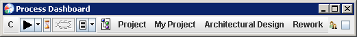
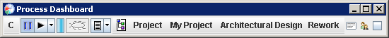
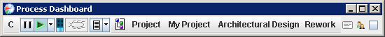
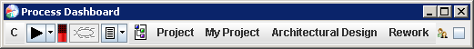

The percent spent indicator gives you continual feedback about the amount of time you have spent on the current task, and how that compares to the amount of time you planned to spend.
If you have not estimated the amount of time you plan to spend on a task, the indicator will display an hourglass. If you would like to enter an estimate for the current task, click on the hourglass.

Once you have estimated the amount of time you plan to spend on a task, the indicator will begin giving visual feedback. When you first begin working on a task, the indicator will show a full blue bar:

As you begin logging time, the indicator will slowly deplete, like the battery charge indicator on a handheld electronic device. The size of the blue bar shows you what percentage of the budgeted time you have left. In the image below, this individual has used up tho-thirds of the time they had planned. One-third of the time is still left:

When a task requires more time than you had planned, it is considered overspent. When that occurs, the bar will turn red, and will begin to grow. The more overspent you are, the larger the red bar will become. In the image below, the task has required 50% more time than originally expected:

When a task is 100% overspent (that is, it has taken twice as long as planned), the red bar will completely fill the space, and will not grow any larger.
At any time, you can hold your mouse over the indicator, and see a tooltip showing the planned time for the task, the actual time spent so far, and the percent spent calculation. (Percent Spent = Actual Time ÷ Planned Time.)
Sometimes, your original estimate for a task was simply a "best guess." As you work on the task, you often gain additional insights and can produce a more accurate estimate of the time that will be required. In general, you can alter your estimate simply by clicking on the percent spent indicator.
Sometimes, however, the time estimate for the current task is not directly editable. The most common example might be the phases in a PSP project. Currently in the dashboard, you only have to enter the total planned time for the overall PSP project. Then, your historical data is used to spread this time across the various process phases. Since the time for an individual phase is a calculation, it is not directly editable. As a result, if you were to view the Project Plan Summary, the planned time for the phases would be displayed with a "read-only" gray background, and you would not be allowed to edit the values. Similarly, clicking on the percent spent indicator would not allow you to edit the estimated time for the phase.
In such situations, the percent spent indicator can actually play two roles. If the PSP project as a whole is taking much longer than expected, each phase will most likely be overspent as well, and the red bar will bring this to your attention. But even if you are under your estimate on the project as a whole, certain phases may be taking more or less time than expected, and this information can be useful. For example, a low quality product might cause you to find many defects in testing, pushing your test time higher than expected. In this case, the red bar could be an indication that the current phase is not going as planned. On the flip side, if you planned to perform a very thorough code review, a nearly full blue bar may be telling you that you haven't spent enough time reviewing yet.